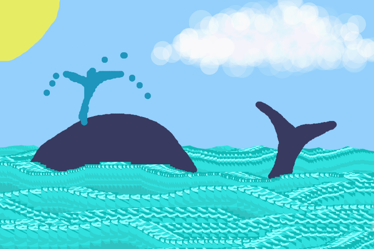

P5.js Self Portrait
For this project is used P5.js. to create a self portrait.

Here is the code I used to make my portrait.
function setup() { createCanvas(600, 600); } function draw() { background(170,214,255); ; fill(221,218,218); strokeWeight(1); //ground fill(44,45,45); rect(0,300, 610,300);//horizon line fill(174,186,183); triangle(0,300,200,300,0,600);//left side walk triangle(600,300,400,300,600,600);//right side walk fill(50,167,81); triangle(0,300,150,300,0,445);//left grass triangle(600,300,450,300,600,445);//right grass //creepy figure fill(36); triangle(70,106,115,135,70,200); fill(336,0,0); ellipse(77,140,10,10);//left eye ellipse(93,150,10,10)//right eye fill(0); ellipse(93,150,5,5)//pupil fill(255); triangle(78,160,92,160,78,170);//smile //tree fill(99,74,52) rect(0,150,40,200)//stump fill(43,88,49); rect(0,80,80,230);//bush //back hair fill(0,0,0); arc(300, 390, 340, 700, radians(180), radians(0)); // body fill(255); ellipse(300,520,248,400); fill(246,226,212); //hand strokeWeight(1.5); fill(0); rect(79,187,2,10);//hand line(80,190,70,180);//topfinger line(80,192,68,186);//2nd line(80,194,68,189);//3rd line(80,197,69,193);//3rd line(80,187,76,180);//3rd //shoulder strokeWeight(1); fill(92); arc(229,630, 120,550,radians(180),radians(270));//left shoulder arc(373, 630, 120, 550,radians(270),radians(0));//right //neck fill(246,226,212); ellipse(300,340,50,50); //jacket fill(92); rect(220, 350, 60, 500);//left rect(320, 350, 60, 500);//right //pocket rect(335,400,35,45);//right //hoodie fill(92); triangle(220,350,280,320,280, 450);//left triangle(320,320,380,350,320, 450);//right //ears fill(246,226,212); ellipse(180,220,40,50);//left ear ellipse(420,220,40,50);//right ear //head fill(246,226,212); ellipse(300,200,235,260); //nose ellipse(298,250,40,20); //smile line(255,270,300,300);//left smile line(300,300,347,270);//right smile //glasses fill(255,255,255); rect(210,182,60,50);//left eye glass rect(325,182,60,50);//right eye glass line(270,210,325,210);//glass bridge //eyes fill(0,0,0); ellipse(220,221,20,20);//left eye ellipse(335,221,20,20);//right eye //eyebrows fill(0); strokeWeight(4); line(210,156,268,150);//left eyebrow line(320,150,373,170);//left eyebrow //bangs fill(0); triangle(370,80, 239,65, 161, 200);//Left bang triangle(359,68, 300,68, 435, 195);//right bang }
DIY Photoshop
For this project I created my own brushes using processing. Here is a picture I drew using my brushes.

Here is the code you can use to play with the brushes on processing.
var img;
var initials ='ki'; // your initials
var choice = '1'; // starting choice, so it is not empty
var screenbg = 240; // off white background
function preload() {
// preload() runs once, it may make you wait
img = loadImage('ocean1.jpg'); // cat.jpg needs to be next to this .js file
img2 = loadImage('ocean2.jpg');
img3=loadImage('sky.jpg');
// you can link to an image on your github account
// img = loadImage('https://dma-git.github.io/images/74.png');
}
function setup() {
createCanvas(600, 400); // canvas size
background(screenbg); // use our background screen color
}
function draw() {
if (keyIsPressed) {
choice = key; // set choice to the key that was pressed
clear_print(); // check to see if it is clear screen or save image
}
if (mouseIsPressed){
newkeyChoice(choice); // if the mouse is pressed call newkeyChoice
}
}
function newkeyChoice(toolChoice) { //toolchoice is the key that was pressed
// the key mapping if statements that you can change to do anything you want.
// just make sure each key option has the a stroke or fill and then what type of
// graphic function
if (toolChoice == '1' ) { // first tool, black line
strokeWeight(1);
stroke('#000000');
line(mouseX, mouseY, pmouseX, pmouseY);
} else if (toolChoice == '2') { // second tool,white transparent small
fill(255,20);
stroke(0, 0);
ellipse(mouseX, mouseY,30,30);
} else if (toolChoice == '3') { // third tool, blue whale tail
fill(56,58,96);
stroke(0, 0);
ellipse(mouseX, mouseY,10,10);
} else if (toolChoice == '4') {//fourth ,sky blue ellipse
fill(148,208,251);
stroke(0, 0);
ellipse(mouseX, mouseY,100,100);
} else if (toolChoice == '5') { //fifth tool,white ellipe large
fill(243,10);
stroke(0, 0);
ellipse(mouseX, mouseY, 40,40);
// make testbox do something!
// line(mouseX, mouseY, pmouseX, pmouseY);
} else if (toolChoice == '6') {//sixth tool, yellow
fill(231,236,101);
stroke(0, 0);
ellipse(mouseX, mouseY,50,50);
} else if (toolChoice == '7') {//seventh tool, light blue whale
fill(133,134,158);
stroke(0, 0);
ellipse(mouseX, mouseY,10,10);
} else if (toolChoice == '8') {//eight tool, blue larger
fill(56,58,96);
stroke(0, 0);
ellipse(mouseX, mouseY,30,30);
} else if (toolChoice == '9') {//ninth tool, blue water spray
fill(29,149,188);
stroke(0, 0);
ellipse(mouseX, mouseY,10,10);
} else if (toolChoice == '0') {//tenth tool, blue line
strokeWeight(1);
stroke(56,58,96);
line(mouseX, mouseY, pmouseX, pmouseY);
} else if (toolChoice == 'g' || toolChoice == 'G') { // g places the image we pre-loaded
image(img, mouseX-25, mouseY-25, 50, 50);
} else if (toolChoice == 's' || toolChoice == 'S') { // g places the image we pre-loaded
image(img2, mouseX-25, mouseY-25, 50, 50);
} else if (toolChoice == 'r' || toolChoice == 'R') { // g places the image we pre-loaded
image(img3, mouseX-25, mouseY-25, 50, 50);
}
}
function testbox(r, g, b) {
// this is a test function that will show you how you can put your own functions into the sketch
x = mouseX;
y = mouseY;
fill(r, g, b);
rect(x-50, y-50, 100, 100);
}
function clear_print() {
// this will do one of two things, x clears the screen by resetting the background
// p calls the routine saveme, which saves a copy of the screen
if (key == 'x' || key == 'X') {
background(screenbg); // set the screen back to the background color
} else if (key == 'p' || key == 'P') {
saveme(); // call saveme which saves an image of the screen
key = ""; // reset the key so that it doesn't keep taking screenshots
}
}
function saveme(){
//this will save the name as the intials, date, time and a millis counting number.
// it will always be larger in value then the last one.
filename=initials+day() + hour() + minute() +second();
saveCanvas(filename, 'jpg');
// }
}
Dog Park Game
I created an interactive game using processing. In this game you are a dog trying to catch the tennis ball before the others at a dog park. I made the ball a little bit smaller so it's more difficult to touch the ball. If you win you become a happy tired doggo. Please click the image below to play the game!